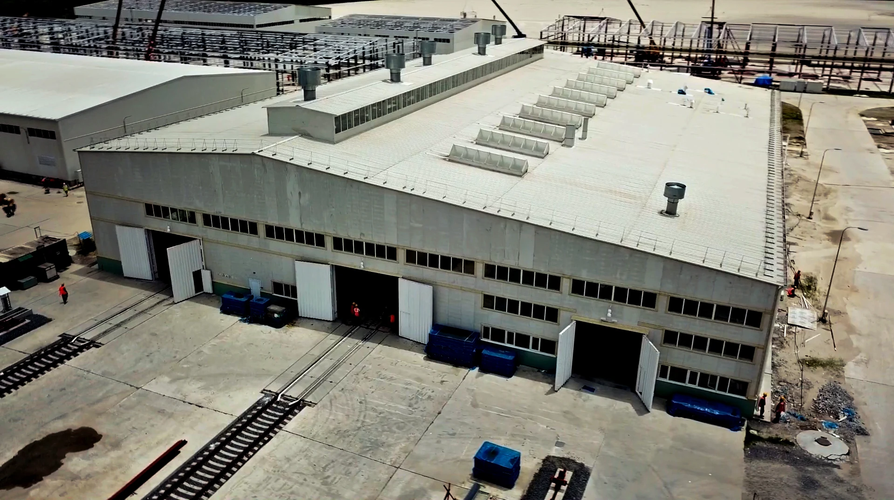
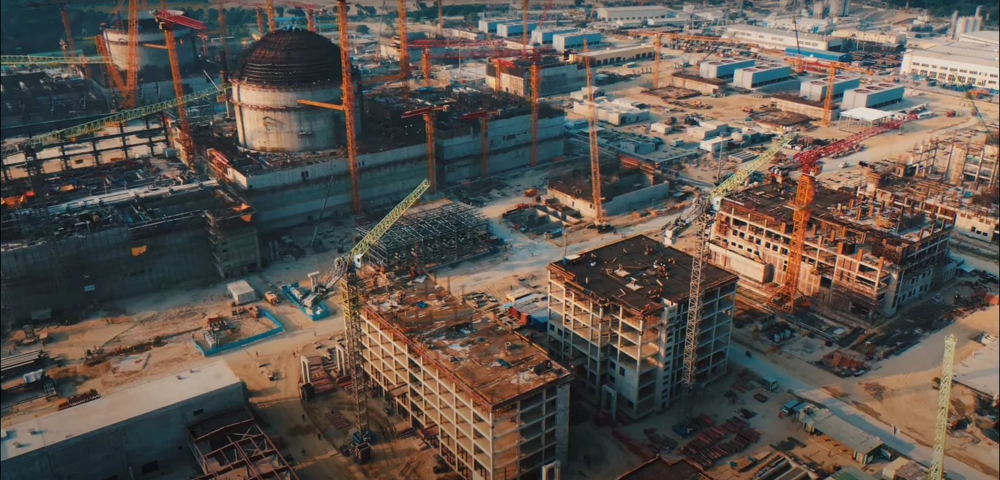
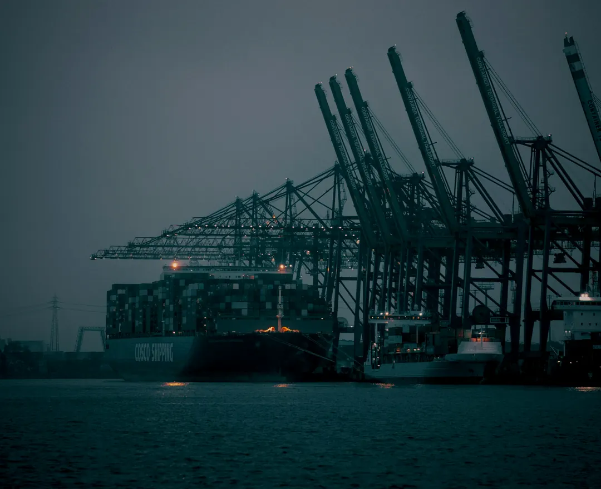
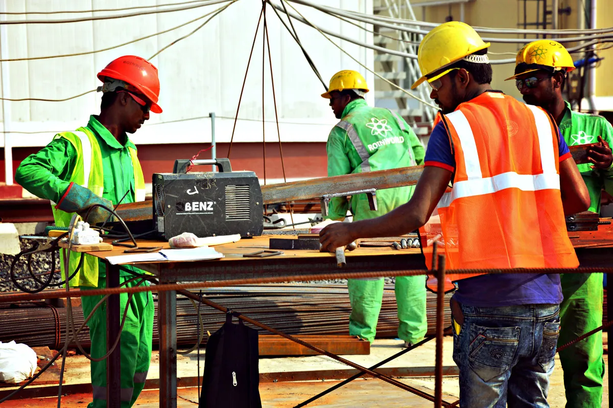
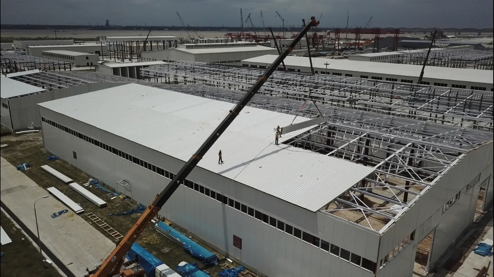
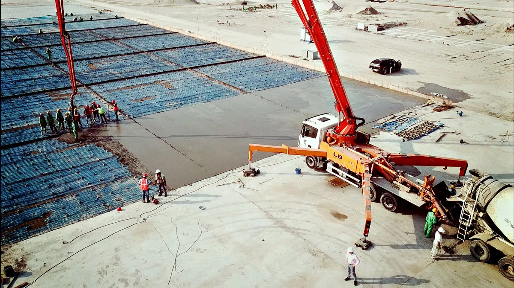
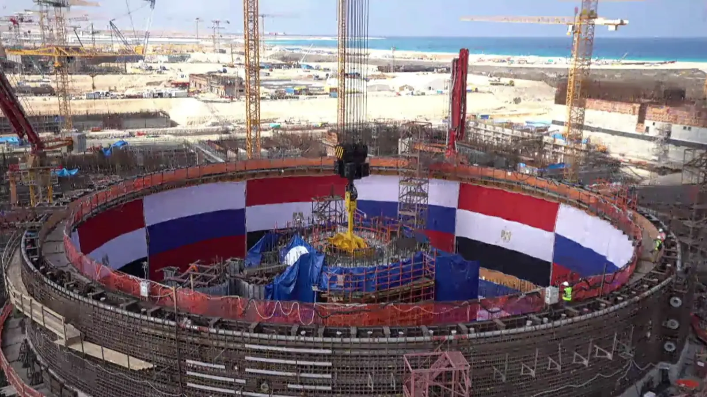

Фотографии
Корпоративный архив
Медиатека ROIN WORLD объединяет панорамы строительства и репортажные кадры рабочих бригад.

Цех предварительной сборки на площадке 4.1 АЭС «Руппур», 2019ROIN WORLD · 4.1-1.jpg
Панорама строительства энергетического комплексаROIN WORLD Рабочая встреча на строительной площадкеROIN WORLD
Рабочая встреча на строительной площадкеROIN WORLD Монтаж металлоконструкций на промышленной площадкеROIN WORLD
Монтаж металлоконструкций на промышленной площадкеROIN WORLD
Разгрузка труб на строительной площадкеROIN WORLD
Специалисты за совместной работой на площадкеROIN WORLD Индустриальные сооружения и водоёмы с высотыROIN WORLD
Индустриальные сооружения и водоёмы с высотыROIN WORLD Промышленные здания и башенные краны при боковом освещенииROIN WORLD
Промышленные здания и башенные краны при боковом освещенииROIN WORLD
Монтаж кровли над пролётами стального каркасаROIN WORLD
Бригада укладывает бетон на армированную плитуROIN WORLD


Фотографии объектов
Под каждым внешним снимком приведены автор, оригинал и лицензия. Для веб-версии применены кадрирование, изменение размера и сжатие WebP. Обработанные снимки с CC BY-SA сохраняют указанную лицензию.
 Ночная подсветка градирен АЭС «Руппур», май 2026ROCKY · CC BY-SA 4.0
Ночная подсветка градирен АЭС «Руппур», май 2026ROCKY · CC BY-SA 4.0 Площадка строительства АЭС «Руппур», 2023Dean Calma / IAEA · CC BY 2.0
Площадка строительства АЭС «Руппур», 2023Dean Calma / IAEA · CC BY 2.0 Градирни АЭС «Руппур» и мост ХардингаJusujon1980 · CC BY-SA 4.0
Градирни АЭС «Руппур» и мост ХардингаJusujon1980 · CC BY-SA 4.0
Строительство АЭС «Эль-Дабаа», Египет, 2025Управление пресс-службы и информации Президента России / www.kremlin.ru · CC BY 4.0 Действующая АЭС «Пакш», 2012. Архивная иллюстрация регионаIAEA Imagebank · CC BY-SA 2.0
Действующая АЭС «Пакш», 2012. Архивная иллюстрация регионаIAEA Imagebank · CC BY-SA 2.0 Хранение материалов на складских стеллажах. Иллюстративное фотоRuss Murray · Unsplash License
Хранение материалов на складских стеллажах. Иллюстративное фотоRuss Murray · Unsplash License Приготовление пищи на профессиональной кухне. Иллюстративное фотоAmos K · Unsplash License
Приготовление пищи на профессиональной кухне. Иллюстративное фотоAmos K · Unsplash License


Photography
Corporate archive
ROIN WORLD’s media library documents construction sites and the people working on them.
- Pre-assembly workshop at Rooppur NPP site 4.1, 2019ROIN WORLD · 4.1-1.jpg
- Aerial view of an energy construction siteROIN WORLD
- A team briefing on siteROIN WORLD
- Structural steelwork at an industrial siteROIN WORLD
- Unloading pipes on siteROIN WORLD
- Site personnel working togetherROIN WORLD
- Aerial view of industrial facilities and basinsROIN WORLD
- Industrial buildings and tower cranes in low sunROIN WORLD
- Roof panels over a wide-span steel frameROIN WORLD
- Crew placing concrete on a reinforced slabROIN WORLD
Project photography
Each external photograph links to its author, original and licence. Web editions are resized, cropped and compressed as WebP. Adapted CC BY-SA photographs retain their corresponding licence.
- Rooppur cooling towers at night, May 2026ROCKY · CC BY-SA 4.0
- Rooppur nuclear power plant under construction, 2023Dean Calma / IAEA · CC BY 2.0
- Rooppur cooling towers and Hardinge BridgeJusujon1980 · CC BY-SA 4.0
- Construction at El Dabaa, Egypt, 2025Управление пресс-службы и информации Президента России / www.kremlin.ru · CC BY 4.0
- Paks nuclear power plant, 2012. Regional archive imageIAEA Imagebank · CC BY-SA 2.0
- Goods on warehouse racks. Illustrative photographRuss Murray · Unsplash License
- Food preparation in a professional kitchen. Illustrative photographAmos K · Unsplash License
الصور
أرشيف الشركة
توثّق مكتبة ROIN WORLD الإعلامية مشاهد من مواقع البناء وفرق العمل فيها.
- ورشة التجميع المسبق في الموقع 4.1 بمحطة روبور، 2019ROIN WORLD · 4.1-1.jpg
- منظر جوي لأعمال إنشاء مجمّع للطاقةROIN WORLD
- اجتماع فريق العمل في الموقعROIN WORLD
- تركيب الهياكل الفولاذية في موقع صناعيROIN WORLD
- تفريغ الأنابيب في موقع البناءROIN WORLD
- متخصصون يعملون معاً في الموقعROIN WORLD
- منظر جوي للمنشآت الصناعية وأحواض المياهROIN WORLD
- مبانٍ صناعية ورافعات برجية تحت ضوء الشمس المائلROIN WORLD
- ألواح السقف فوق هيكل فولاذي واسع البحورROIN WORLD
- فريق يصب الخرسانة على بلاطة مسلحةROIN WORLD
صور المواقع
يرد اسم المصوّر ورابط الأصل والترخيص أسفل كل صورة خارجية. عُدّلت الأبعاد واقتُصّت الصور وضُغطت بتنسيق WebP. تحتفظ الصور المعدلة بترخيص CC BY-SA المبين لكل صورة.
- أبراج تبريد محطة روبور ليلاً، مايو 2026ROCKY · CC BY-SA 4.0
- موقع إنشاء محطة روبور النووية، 2023Dean Calma / IAEA · CC BY 2.0
- أبراج تبريد روبور وجسر هاردينغJusujon1980 · CC BY-SA 4.0
- أعمال الإنشاء في محطة الضبعة، مصر، 2025Управление пресс-службы и информации Президента России / www.kremlin.ru · CC BY 4.0
- صورة أرشيفية من محطة باكش القائمة عام 2012IAEA Imagebank · CC BY-SA 2.0
- بضائع على رفوف مستودع. صورة توضيحيةRuss Murray · Unsplash License
- إعداد الطعام في مطبخ مهني. صورة توضيحيةAmos K · Unsplash License